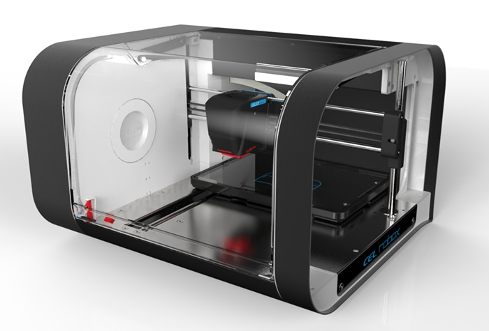
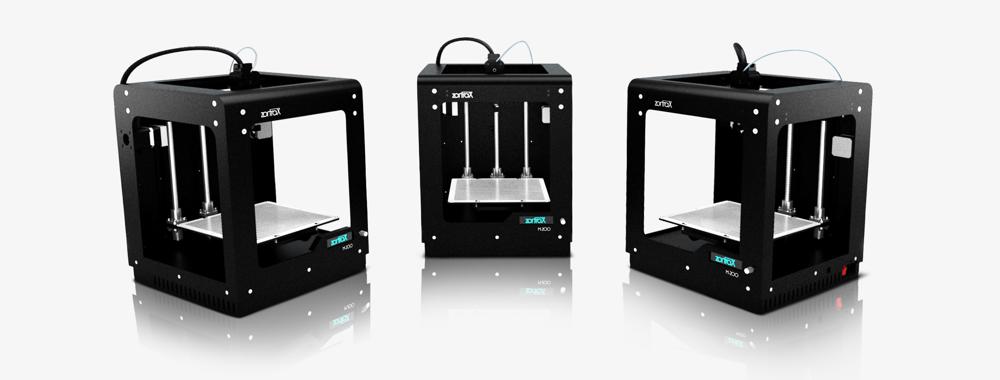

|  |  |
|
|
The 3D printing process is very detailed and interesting. 1. Pre Processing: A CAD (Computer Aided Design) is developed as a plan for what the 3D printer will be making. The CAD should be comprised of layers so the 3D printer can print the design. 2. Production: When you are done with the CAD and have uploaded it up th the orinter, select "Print' to start the printing. Two materials enter the extrusion head, one to make the part and one to support it. Heat is applied to soften the plastics and have them adhere. 3. Post Processing: When the part is done, open the printer and remove it. The 3D printing process can be done multiple ways, but this is the most common. |
|